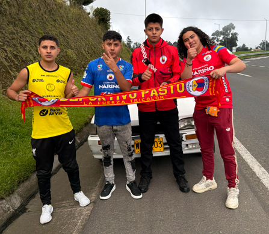
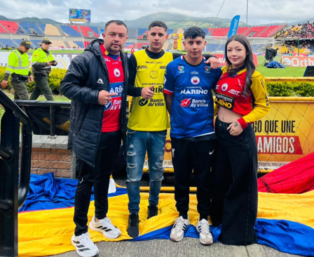
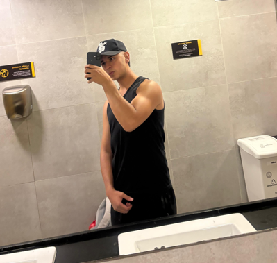

Mis hobbies



Soy apasionado por el fútbol e hincha fiel del Deportivo Pasto. Sigo al equipo desde 2019 y disfruto ir al estadio a apoyarlos con la barra.
Disfruto mucho de la actividad física, especialmente del entrenamiento de fuerza. El gimnasio es mi espacio para desafiarme y mejorar mi rendimiento día a día.


Me apasiona el boxeo, tanto practicarlo como ver peleas. Valoro la disciplina y la técnica que exige este deporte de contacto.